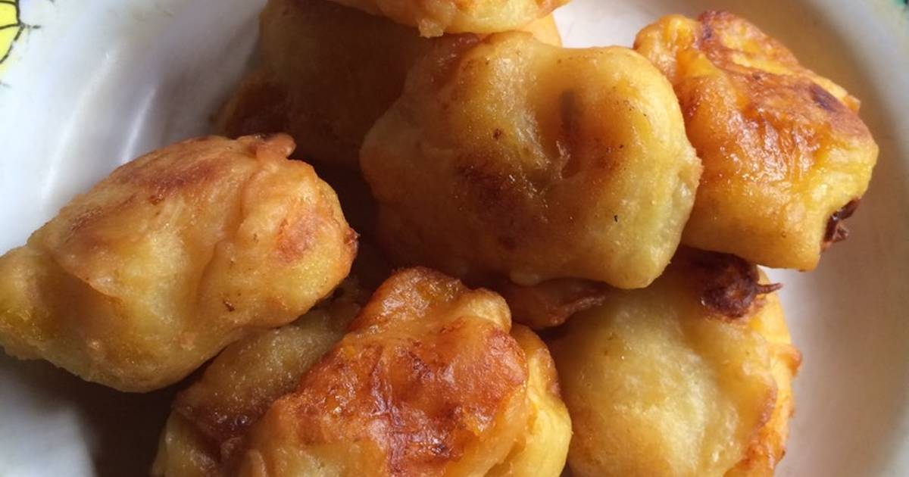
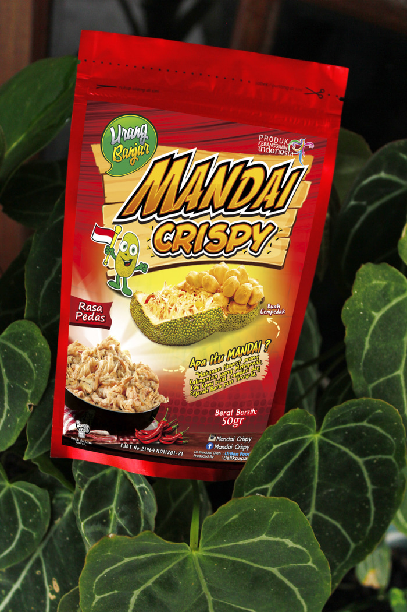
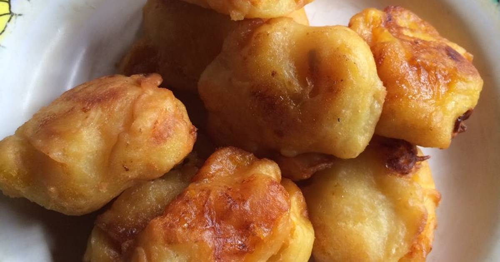
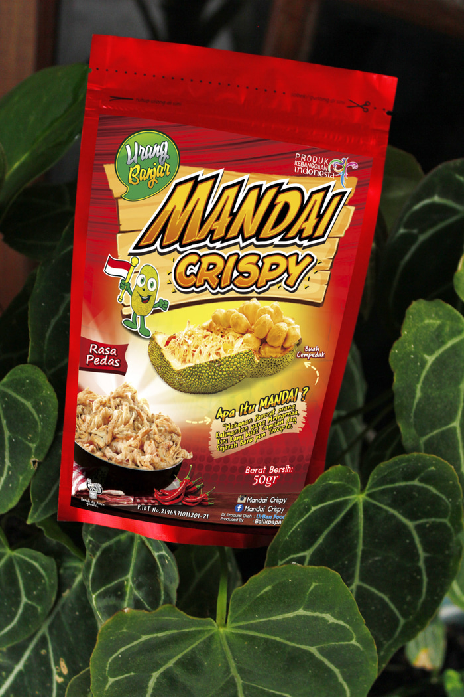

|
Bagi masyarakat Kalimantan, khususnya masyarakat Banjar, Mandai terdengar tidak asing dan bahkan sangat terkenal.
Mandai adalah sebutan untuk kulit cempedak yang sudah melalui proses fragmentasi. Masakan olahan yang bahan utamanya adalah kulit cempedak ini bisa dijadikan lauk menemani makanan utama seperti nasi, rasanya sangat nikmat dengan tekstur berserat serta lembut, kelembutannya tergantung seberapa lama kulit cempedak di rendam.
10k / cup